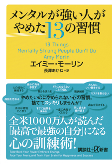
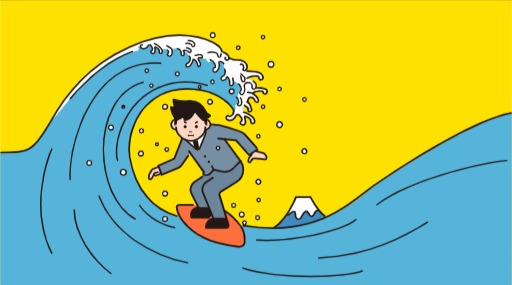
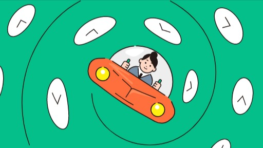

やめたいのにやめれない心の習慣。 捨ててスッキリしませんか？


実際に自分が感じていたことを解決してくれる一冊でした。 エミリー・モーリンさんは精神科医で、自分の経験や患者さんの体験談をもとに自分なりに解釈し、一冊の本にまともたものとなっています。身近に感じる出来事が多く、自分と重ねながら読み進めることができました。
あらゆる出来事に対して、マイナスな感情を持つことは仕方がないですが、それを口に出してしまうと、それは自分の力を手放しているということになるんです。どういうことかというと、理不尽な出来事に対して自分の力を注入すると、大事なことに対して力が出せなくなってしまうからです。

「あのときはよかったなー」「学生時代はよかったなー」と過去を思い出すことがあると思います。しかし、現状がつらい時にそこに縋りすぎると未来が見えなくなってしまい。何も手につかなくなってしまいます。
素晴らしかったです。素晴らしかったです。素晴ら です。
素晴らしかったです。素晴らしかったです。素晴らし です。素晴らしかったです。素晴らしかったです。